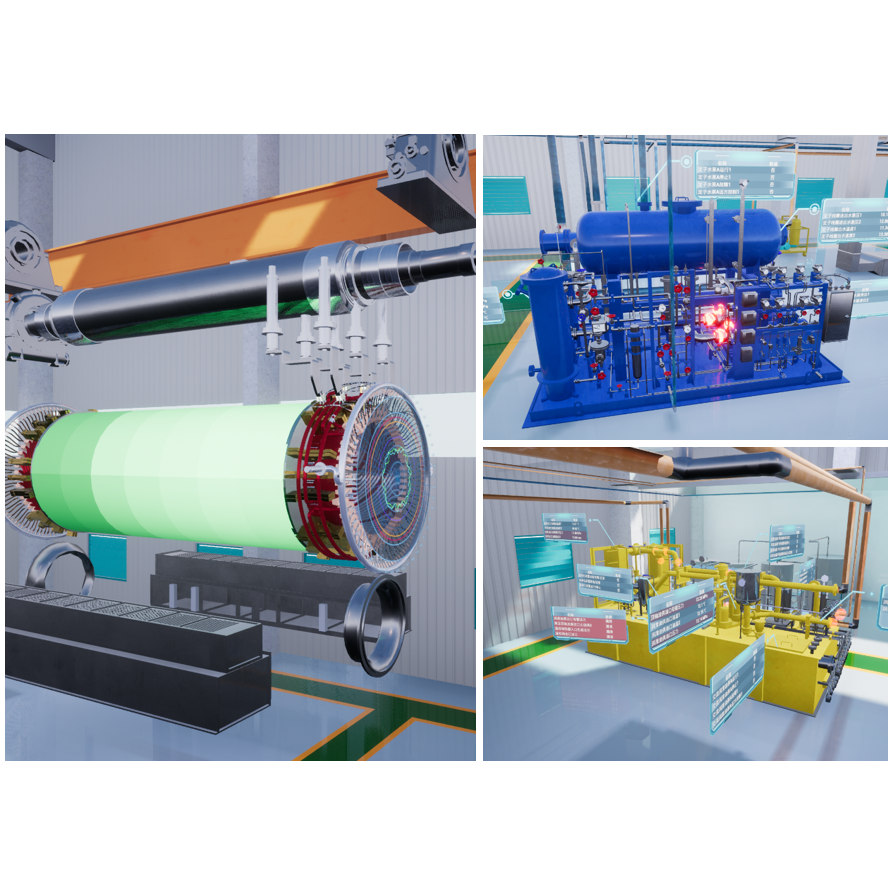

Room 11-201, East Side Building, Tsinghua University, Beijing, P.R. China, 100084
(+86) 155-1072-8994 |
juncguo AT gmail.com |
guojunchen55 |
jcggg.me |
500px:JCGGG
Biography
Junchen is a 3rd-year Ph.D. student in Software Engineering at Tsinghua
University, studying networks and systems in SUN Group under the guidance of
Prof. Yuan He. His academic
interests include Industrial Internet of Things, Wireless Sensing, Mobile and
Ubiquitous Computing. Junchen is currently the student leader of Pavatar project and
a member of the photography team of Tsinghua student art group.
During the first three years of Junchen's Ph.D.,
he has published several papers on high-level international journals and
conferences, e.g.
IEEE Signal Processing Magazine, IEEE INFOCOM, IEEE ICPADS, IEEE ICII and etc.,
and won the best paper award of IEEE ICII 2018 and best student paper award of IEEE
ICPADS 2017.
Moreover, he has participated in 6 invention patents as the main inventor,
two of which have passed the preliminary examination and four have entered the
substantive examination.
Publications
- [INFOCOM 2019] TwinLeak: RFID-based Liquid Leakage Detection in Industrial Environments
Junchen Guo, Ting Wang, *Yuan He, Meng Jin, Chengkun Jiang, Yunhao Liu
The 14th IEEE International Conference on Computer Communications, Paris,
France, Apr. 29 - May 2, 2019
TwinLeak won the Best In-Session Presentation Award in INFOCOM 2019!
- [IPSN 2019] 3D-OmniTrack: 3D Tracking with COTS RFID Systems Environments
Chengkun Jiang, Yuan He, Songzhen Yang, Junchen Guo
The 18th ACM/IEEE Conference on Information Processing in Sensor Networks,
Montreal, Canada, Apr. 16 - 18, 2019
- [EWSN 2019] Ph.D. Forum: Battery-Free Sensing in Industrial Environments
Junchen Guo
The 16th International Conference on Embedded Wireless Systems and Networks,
Beijing, China, Feb. 25 - Feb. 27, 2019
- [EWSN 2019] DSFD Workshop: TVV: Real-Time Visual Identity and Tracking with Edge Computing
Xinpeng Zhang, Junchen Guo, Chunya Liu, Jie Zhou, Yao Luo, Long Liu, Meng
Jin, Ziqiang Zhou, Zhoubin Liu
The 1st International Workshop on Distributed Fog Services Design, Beijing,
China, Feb. 25 - Feb. 27, 2019
- [Sensys 2018] Demo Abstract: IoT for the Power Industry: Recent Advances and Future Directions with Pavatar
Yuan He, *Junchen Guo, Long Liu, Haozhen Liu, Xinpeng Zhang, et al.
The 16th ACM Conference on Embedded Networked Sensor Systems, Shenzhen, China,
Nov. 4-7, 2018.
- [ICII 2018] TagLeak: Non-intrusive and Battery-free Liquid Leakage Detection with Backscattered Signals
Junchen Guo, Ting Wang, Meng Jin, Songzhen Yang, Chengkun Jiang, Long
Liu, *Yuan He
The 1st IEEE International Conference on Industrial Internet, Bellevue, WA, USA,
Oct. 21-23, 2018
TagLeak won the Best Paper Award in ICII 2018!
- [ICNP 2018] Canon: Exploiting Channel Diversity for Reliable Parallel Decoding in Backscatter Communication
Chengkun Jiang, *Yuan He, Meng Jin, Xiaolong Zheng, Junchen Guo
The 26th IEEE International Conference on Network Protocols, Cambridge, UK,
Sept. 24-27, 2018
- [SPM 2018] From Surveillance to Digital Twin: Challenges and Recent Advances of Signal Processing for Industrial IoT
Yuan He, *Junchen Guo, Xiaolong Zheng
IEEE Signal Processing Magazine, Special Issue on Internet-of-Things, Volume 35,
Issue 5, Page 120-129, Sept. 2018
SCI I (Top level), IEEE SPM Impact Factor = 9.654 at the
submission year
- [ICPADS 2017] Pangu: Towards a Software-Defined Architecture for Wireless Sensor Networks
Junchen Guo, *Yuan He, Xiaolong Zheng.
The 23rd IEEE International Conference on Parallel and Distributed Systems,
Shenzhen, China, Dec. 15-17, 2017.
Pangu won the Best Student Paper Award in ICPADS 2017!
Recent Projects
|  |
Industrial IoT for the Power IndustryIndustrial IoT Digital Twin
|

|
Battery-Free Liquid Leakage Detection SystemsIndustrial IoT Wireless Sensing RFID
|

|
Software-defined Wireless Sensor NetworksIndustrial IoT Wireless Sensor Networks Software-Defined Networking
|
Education
Tsinghua University (THU)
- Ph.D. in Software Engineering, research direction: Internet-of-Things
University of Science and Technoloy of China (USTC)
- B.E. in Computer Science and Technology, with a minor in Business Administration, GPA 3.78/4.3, Rank 10/102
Internship Experience
Cainiao Network Technology Co., Ltd (Alibaba Group)
- Software Developer Intern @ Wireless Group, working on 菜鸟裹裹
Social Experience
Volunteer: ACM Turing Celebration Conference (TURC) 2019
- Reception / Registration
Volunteer: Embedded Wireless Systems and Networks (EWSN) 2019
- VIP Reception / Photography
Social Practice: Lunqi Robot Co., Ltd
- Working on an inspection robot.
Volunteer: National College Competition on Internet of Things 2017
- Compere
Short exchange: Sakura Science Plan (SSP) supported by Japan Science & Technology Agency (JST) and USTC
- The theme of USTC-SSP 16 is Internet-of-Things (IoT).
Volunteer: CCF China National Computer Congress (CNCC) 2015
- Reception / Registration Guidance
Honors and Scholarships
During Ph.D. @ THU
-
THU, 10/2019The First Prize Scholarship for Excellent Student of THU (Supported by Huawei)
-
THU, 05/2019The First Prize of "Challenge Cup" National College Student Curricular Academic Science and Technology Works Competition
-
IEEE, 05/2019IEEE INFOCOM 2019 Best In-Session Presentation Award
-
IEEE, 03/2019IEEE INFOCOM 2019 Student Travel Grant Award
-
THU, 10/2018The First Prize Scholarship for Excellent Student of THU (Supported by Shenzhen Stock Exchange)
-
IEEE, 10/2018Best Paper Award of IEEE ICII 2018
-
ACM China, 12/2017Best Poster Award of ACM International Workshop on IoT and Cloud Computing 2017
-
IEEE, 12/2017Best Student Paper Award of IEEE ICPADS 2017
During undergraduate @ USTC
-
USTC, 06/2016Outstanding Graduate Scholarship of USTC
-
USTC, 05/2016Outstanding National University Student Innovation and Entrepreneurship Training Program
-
Seagate Technology, 2014 - 2015The First Prize Scholarship for Excellent Student of USTC (Seagate Scholarship)
-
USTC, 2012 - 2013, 2013 - 2014, 2014 - 2015The First Prize for Excellent Student in Elite Class of Computer and Information Science Scholarship of USTC
-
COMAP, 02/2015Meritorious Winner for Interdisciplinary Contest in Modeling (ICM)
-
Dà-Jiāng Innovations Science and Technology Co., Ltd, 02/2015The Best Creative Award for DJI Developer Challenge
-
USTC, 2013 - 2014The First Prize Scholarship for Excellent Student of USTC ("Guangtai Wang" Leadership Scholarship)
-
USTC, 09/2013The Runner-Up for USTC RoboGame
-
USTC, 2012 - 2013The Second Prize Scholarship for Excellent Student of USTC
Project Gallery
During undergraduate @ USTC
Kedaibiao: an interactive community for university students and their teachers
Cainiao Guoguo: a commercial application for logistics services of Alibaba
CapSim: a social network model to predict churn rate of enterprise employees
SkyTraveller: a comprehensive mobile application for DJI drones
Playboy210: a smart domestic robot